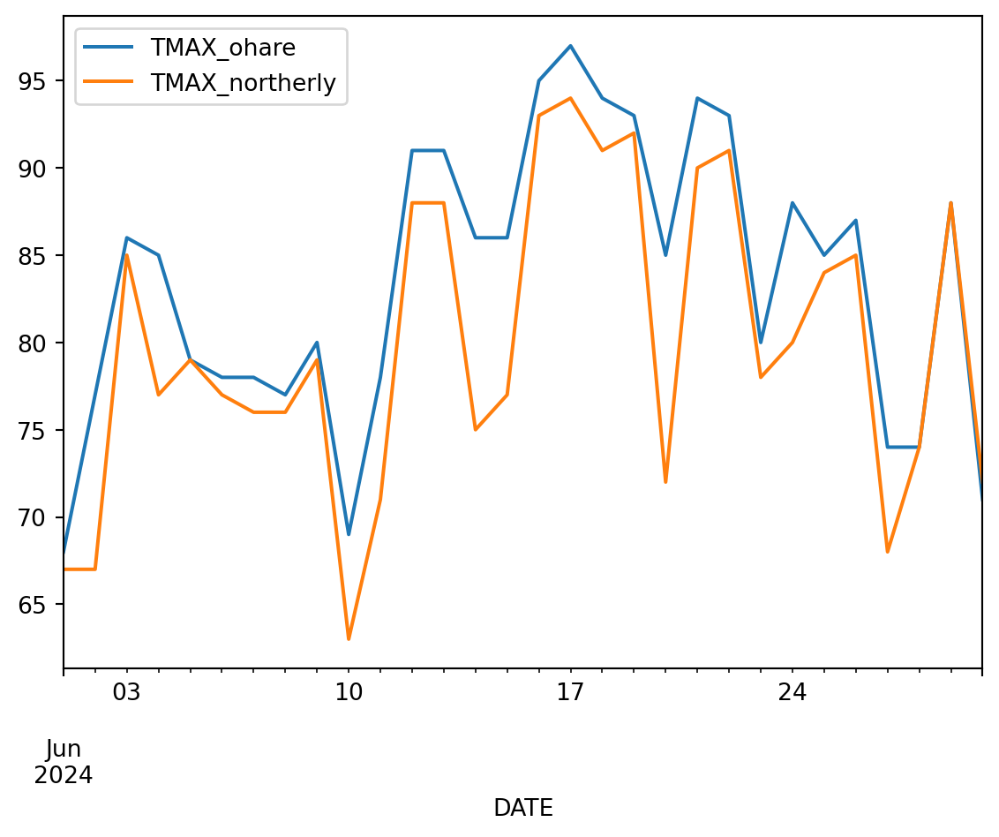
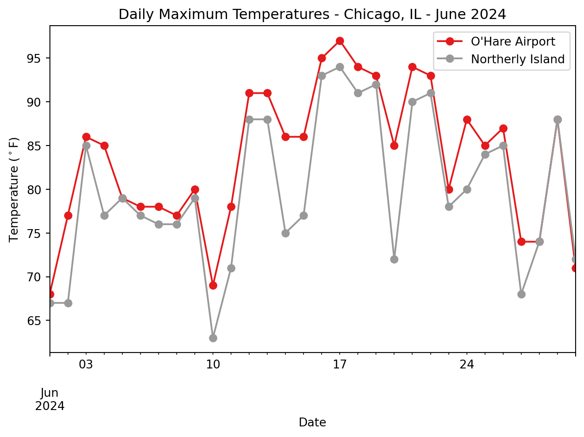

tmax_df.plot()
Let’s try plotting the joined DataFrame, just like we plotted the data previously:
Hopefully you can see all the data! However, this plot is missing some key elements, and is sadly lacking in style.
What do you notice about this plot that you would like to change for a final figure?
Something you might have noticed about your plot is that the labels in the legend don’t look very nice. Most things about hte plot we can change by passing parameters to the .plot() method (see below). However, we think the easiest way to change the legend labels in Python is to rename the columns. Python will automatically use the column names as legend labels just like it did in the first plot!
Once we rename columns to non-machine-readable names that include spaces and special characters, they will be harder to work with in Python. That’s why we’ve used a different name to store the DataFrame with renamed columns.
Starting with the sample code below, which contains a dictionary, or set of named values:
previous_column_name to the name of one of the columns you want to rename, and New Column Name to the label you want to appear on your plot.{})), and change the values to match the other column you want to rename. Make sure to separate the two rows with a comma so Python knows you’re starting a new entry.Now, we’re ready to make a quality figure of the data!
Below, you’ll see some code to make a customized figure of your data. Starting there:
TITLE HERE with your figure title# at the beginning of the line.# do in Python?
The # indicates a comment – it tells Python to ignore everything on that line. Comments are great for leaving notes to yourself or others, or for trying out slightly different pieces of code.

Take a few minutes to discuss the patterns and trends you see in the data with your neighbors.